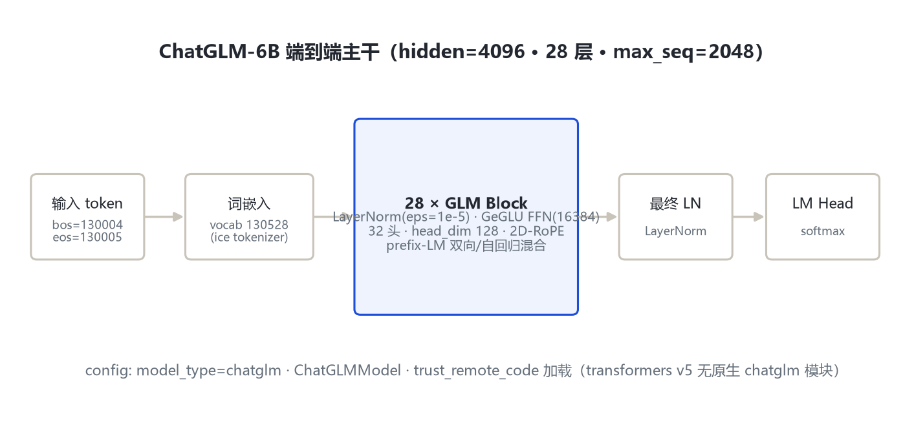
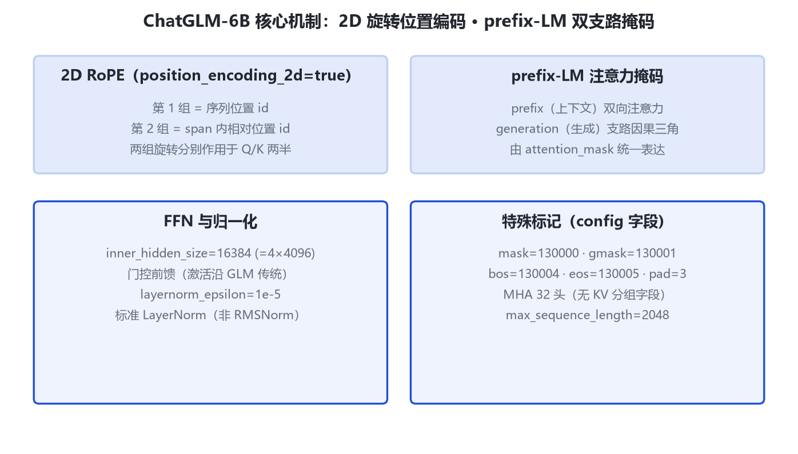

本页以 HF THUDM/chatglm-6b 远端 config（hf-mirror）与 arXiv:2406.12793 为唯一依据。transformers v5 无原生 chatglm 模块，需 trust_remote_code 加载官方实现。
来源：HF THUDM/chatglm-6b 远端 config（hf-mirror 拉取，2026-10-31，留档 _tools/_cfgpull/）。
| config 字段 | 取值 | 含义 |
|---|---|---|
| model_type / architectures | chatglm / ChatGLMModel | 需 trust_remote_code |
| hidden_size | 4096 | 隐层 |
| num_layers | 28 | 层数 |
| num_attention_heads | 32 | head_dim=128 |
| inner_hidden_size | 16384 | =4×4096 |
| position_encoding_2d | true | 2D 旋转位置编码 |
| max_sequence_length | 2048 | 上下文 |
| vocab_size | 130528 | ice tokenizer |
| layernorm_epsilon | 1e-5 | LayerNorm |
| bos/eos/mask/gmask/pad | 130004/130005/130000/130001/3 | 对话控制标记 |


两组旋转位置 id（序列位置 + span 内相对位置），分别作用于 Q/K 两半。
prefix 双向、generation 因果三角，同一模型兼顾理解与生成。
mask=130000/gmask=130001 沿用 GLM；约 1T token 中英预训练 + SFT。
INT4 量化后消费级显卡可本地运行（6.2B）。
| 项 | 取值 |
|---|---|
| Q 头数 | 32 |
| KV 头数 | 32（标准 MHA，无分组字段） |
| head_dim | 4096/32=128 |
| 位置编码 | 2D-RoPE（position_encoding_2d=true） |
| 类型 | prefix-LM |
对比：ChatGLM2 才引入 multi_query_attention=true / group_num=2；本代为全 MHA。
| token | ID |
|---|---|
| mask_token_id | 130000 |
| gmask_token_id | 130001 |
| bos / eos | 130004 / 130005 |
| pad | 3 |
| vocab_size | 130528 |
| 维度 | GLM-130B | ChatGLM-6B | ChatGLM2 |
|---|---|---|---|
| 层/hidden | 70/12288 | 28/4096 | 28/4096 |
| 注意力 | 双向 GLM | prefix 2D-RoPE | MQA 1D-RoPE |
| 归一化 | DeepNorm | LayerNorm | RMSNorm |
| 上下文 | 2048 | 2048 | 32768 |
| 词表 | 150000 | 130528 | 65024 |
数据来自各模型官方 config / 论文：层数、hidden、FFN、词表（千）等字段逐值复算。